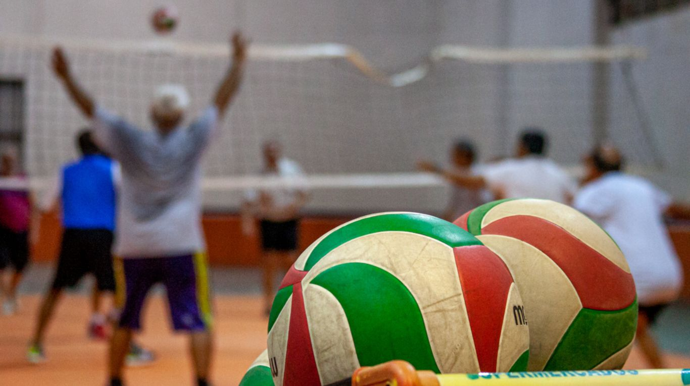
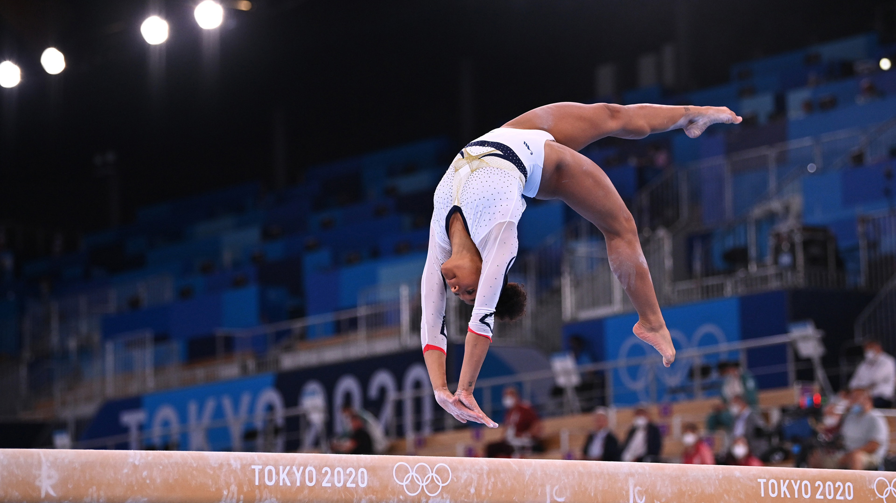

Nuestros deportes
Newcom
El newcom como disciplina para personas mayores fue incorporado en los Juegos Nacionales Evita en el año 2008. Este deporte es una adaptación del vóleibol, que surge en 1895 en New Orleans, Estados Unidos, donde la pelota no se golpea, sino que se atrapa y se lanza por arriba de la red.
Enfocada para adultos
Funcional
El entrenamiento funcional se basa en realizar ejercicios que se adaptan a los movimientos naturales del cuerpo humano para trabajar de forma global músculos y articulaciones.

Enfocada para cualquier persona
Gimnasia artistica
La gimnasia artística es una modalidad de gimnasia que consiste en la realización de una composición coreográfica, combinando de forma simultánea y a una alta velocidad, movimientos corporales. Las características de este deporte exigen del gimnasta unas condiciones físicas excepcionales.
Enfocada para cualquier persona
Actividades
Horarios de Actividades
| Turno/Días | Lunes | Martes | Miércoles | Jueves | Viernes | ||||
|---|---|---|---|---|---|---|---|---|---|
| Mañana | FUNCIONAL (PF. SOLEDAD RODRIGUEZ) EFA 9 A 10 HS | NEWCOM (PF. NICOLAS RODRIGUEZ) ADULTOS 9 a 10 hs | FUNCIONAL (PF. SOLEDAD RODRIGUEZ) EFA 9 A 10 HS | NEWCOM (PF. NICOLAS RODRIGUEZ) ADULTOS 9 a 10 hs | |||||
| GIMNASIA ARTÍSTICA (12 AÑOS O +) (PF. SOLEDAD RODRIGUEZ) 10 a 11 HS | GIMNASIA ARTÍSTICA (12 AÑOS O +) (PF. SOLEDAD RODRIGUEZ) 10 a 11 HS | 3x1 DEPORTES (PF. NICOLAS RODRIGUEZ) 9 a 12 años 10 a 11 hs | 3x1 DEPORTES (PF. NICOLAS RODRIGUEZ) 9 a 12 años 10 a 11 hs | ||||||
| Tarde | HANDBALL (PF. MARCO ANDIA) 9 A 14 AÑOS 14 a 15 HS | HANDBALL (PF. MARCO ANDIA) 9 A 14 AÑOS 14 a 15 HS | FÚTBOL (PF. MARCO ANDIA ) 9 A 12 AÑOS 15 a 16 HS | FÚTBOL (PF. MARCO ANDIA) 9 A 12 AÑOS 15 a 16 HS | |||||
| ATLETISMO (PF. JORGE JIMENEZ) 10 AÑOS EN ADELANTE 16 A 17 HS | GIM.ARTÍSTICA (PF. VILLAGRAN MERCEDES) 6 A 11 AÑOS 16 A 17 HS | GIM.ARTÍSTICA (PF. VILLAGRAN MERCEDES) 6 A 11 AÑOS 16 A 17 HS | ATLETISMO (PF. JORGE JIMENEZ) 10 AÑOS EN ADELANTE 16 A 17 HS | ||||||
| Vespertino | EFI (6 A 8 AÑOS) (PF. LORDEN CAROLINA) *16.30 A 17.30HS | NATACIÓN Y DEPORTES (PF. LORDEN CAROLINA) 12 A 14 AÑOS 16.40 A 17.40 HS | EFI (6 A 8 AÑOS) (PF. LORDEN CAROLINA) *16 A 17 HS | NATACIÓN Y DEPORTES (PF. LORDEN CAROLINA) 12 A 14 AÑOS 16.40 A 17.40 HS | |||||
| Nocturno | AAN (PF. JIMENEZ JORGE) 12 AÑOS EN ADELANTE 17.15 A 19.15 | HS VOLEY PROYECTO (PF. COR DE CASTRO) 15 A 18 AÑOS 17 A 18 HS | VOLEY INFANTIL (PF.JORGE JIMENEZ ) 9 A 12 AÑOS 17 A 18 HS | VOLEY PROYECTO (PF. COR DE CASTRO) 15 A 18 AÑOS 17 A 18 HS | VOLEY INFANTIL (PF.JORGE JIMENEZ) 9 A 12 AÑOS 17.15 A 18.15 HS | ||||
| BASQUET INFANTIL (PF. CALVO ANDRES) 9 A 12 AÑOS 18 a 19 HS | VOLEY ADO (PF. JORGE JIMENEZ) 13 A 15 AÑOS 18 a 19 HS | BASQUET INFANTIL (PF. CALVO ANDRES) 9 A 12 AÑOS 18 a 19 HS | VOLEY ADO (PF. JORGE JIMENEZ) 13 A 15 AÑOS 18.15 a 19.15 HS | ||||||
| FÚTBOL MIXTO (PF. TORREIRO GONZALO) ADULTOS 19 A 21HS | BASQUET PRE - ADO (PF. CALVO ANDRES) 13 A 15 AÑOS 19 a 20 HS | VOLEY JOV (PF.JORGE JIMENEZ ) 15 A 18 AÑOS 19 a 20 HS | BASQUET PRE - ADO (PF. CALVO ANDRES) 13 A 15 AÑOS 19 a 20 HS | ||||||
| VOLEY JOV (PF. JORGE JIMENEZ ) 15 A 18 AÑOS 19.15 a 20.15 HS | BASQUET JÓVENES ( ) 15 A 18 AÑOS 20 A 21 HS | VOLEY ADULTOS (PF. JIMENEZ JORGE) MAYORES DE 18 AÑOS 20 a 21 HS | BASQUET JÓVENES ( ) 15 A 18 AÑOS 20 A 21 HS | VOLEY ADULTOS (PF. JIMENEZ JORGE) MAYORES DE 18 AÑOS 20.15 a 21.15 HS | BASQUET ADULTOS ( ) MAYORES DE 18 AÑOS 21 A 22 HS | BASQUET ADULTOS ( ) MAYORES DE 18 AÑOS 21 A 22 HS | |||